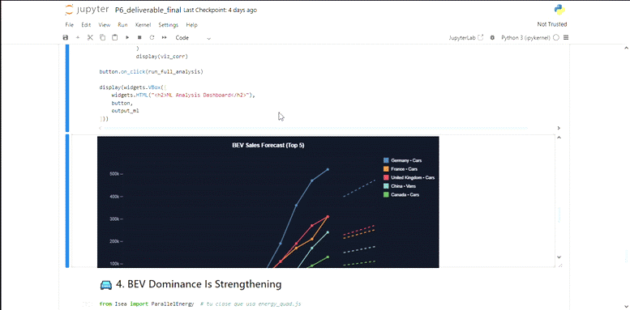

Trend Line Chart
Purpose: To visualize historical trends and future predictions for multiple time series on a single chart.
This visualization combines solid lines for historical data with dashed lines for predictions, allowing users to compare trajectories and forecasts across different entities.

Components and Features
-
Dual-Line Encoding:
- Solid lines: Represent historical (actual) data points.
- Dashed lines: Represent predicted or forecasted values.
- This clear visual distinction helps users understand data certainty.
-
Interactive Legend:
- Click: Toggle series visibility by clicking on legend items.
- Hidden series are grayed out in the legend and removed from the chart.
-
Hover Crosshair:
- A vertical line follows the cursor, snapping to years.
- A tooltip displays all visible series values for the selected year, sorted by magnitude.
-
Automatic Scaling:
- Axes automatically adjust based on visible series, recalculating when series are toggled.
How to Build
The D3TrendLine widget accepts a list of series, where each series is a dictionary containing:
label: Name of the series (shown in legend)history_x/history_y: Arrays for historical data pointspred_x/pred_y: Arrays for prediction data pointscolor(optional): Custom color for the series
The history and prediction lines connect automatically if they share a common year.
Quick Example
from Isea.trendline import D3TrendLine
# Sample data: EV adoption trends
series_data = [
{
"label": "Norway",
"history_x": [2018, 2019, 2020, 2021, 2022, 2023],
"history_y": [31, 42, 54, 65, 79, 82],
"pred_x": [2023, 2024, 2025, 2026],
"pred_y": [82, 88, 92, 95],
"color": "#00d4ff"
},
{
"label": "Germany",
"history_x": [2018, 2019, 2020, 2021, 2022, 2023],
"history_y": [2, 3, 6, 13, 18, 23],
"pred_x": [2023, 2024, 2025, 2026],
"pred_y": [23, 30, 38, 45],
"color": "#ff6b6b"
},
{
"label": "USA",
"history_x": [2018, 2019, 2020, 2021, 2022, 2023],
"history_y": [2, 2, 2, 4, 6, 9],
"pred_x": [2023, 2024, 2025, 2026],
"pred_y": [9, 14, 20, 28],
"color": "#ffd93d"
},
]
trend = D3TrendLine(
data=series_data,
title="EV Market Share Trends & Forecast",
yLabel="Market Share (%)",
xLabel="Year",
width=800,
height=400
)
trend
Available Configuration Options
| Parameter | Type | Description |
|---|---|---|
data |
list | List of series dictionaries (see structure above) |
title |
str | Chart title displayed at the top |
xLabel |
str | Label for the X-axis (default: "Year") |
yLabel |
str | Label for the Y-axis (default: "Value") |
width |
int | Chart width in pixels (default: 800) |
height |
int | Chart height in pixels (default: 400) |
Series Data Structure
Each series dictionary should contain:
| Key | Type | Description |
|---|---|---|
label |
str | Series name for legend |
history_x |
list | X values (years) for historical data |
history_y |
list | Y values for historical data |
pred_x |
list | X values (years) for predictions |
pred_y |
list | Y values for predictions |
color |
str | (Optional) Hex color code |
Analytical Questions This View Can Answer
- Which countries are leading the EV transition and by how much?
- How do growth trajectories differ between early adopters and late entrants?
- What do the forecasts suggest about market convergence?
- At what year might a lagging country catch up to a leader?